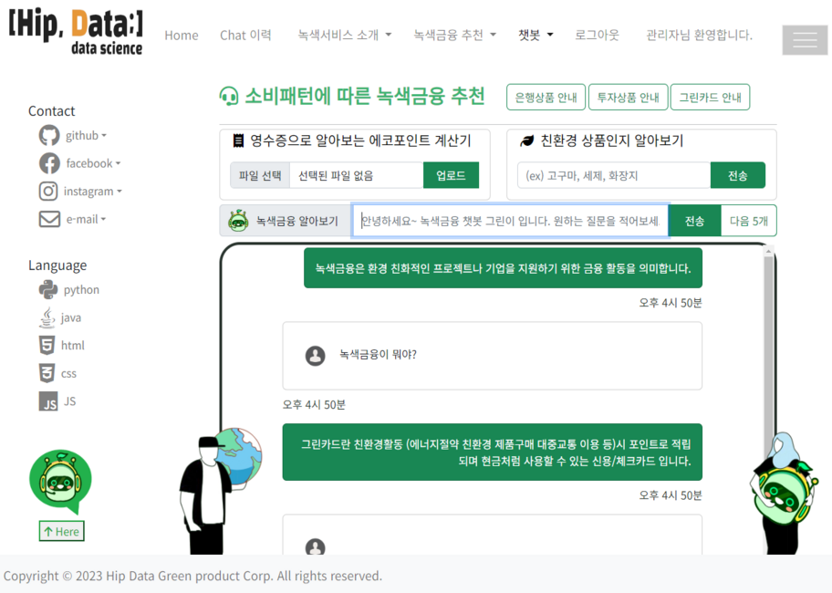
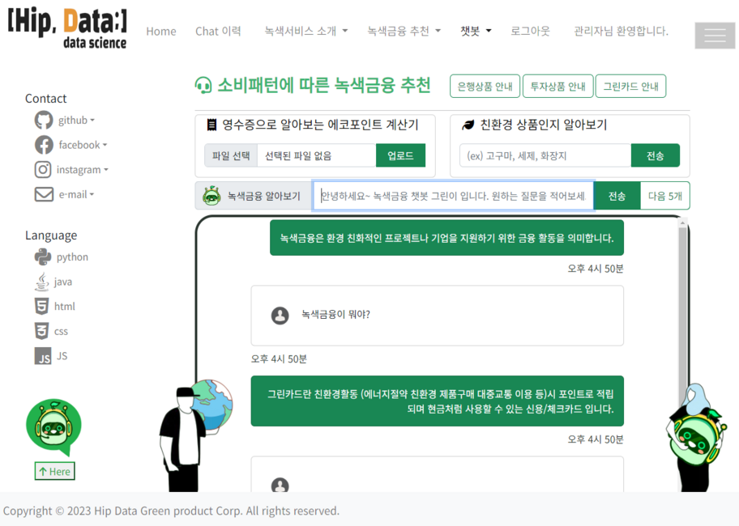

My responsibility
프로젝트를 성공적으로 완성하기 위해서
프로젝트를 성공적으로 완성하기 위해서
아래와 같은 업무를 진행해왔습니다.
- 수행 기간: 2023.10.18 ~ 2023.11.01(10일)
- 참여 인원: 5명
- 기여도: PE/BE: 60%,Data-collection:20%,Design: 20%
ko-sentence-transformers 한국어 임베딩모델을 이용하여, 사용자의 질문입력을
벡터화하여 시나리오의 CSV파일을 비교하여 유사도가 높은 답을 대답하도록 하였습니다.
가까운 매장 안내는 사용자에게 주소(동까지)를 입력받아 네이버 지도 웹을 Selenium, Crawling을 이용하여 안내하도록 구현하였습니다.
Tesseract ORC API를 이용하여, 영수증 이미지를 텍스트화 하여,
친환경 상품 여부확인 후, 적립예상 포인트를 합산하여 알려줍니다.
Python, SQLite를 이용한 대화이력 저장 및 Chat이력 페이지를 제작하여,
사용자가 과거에 대화한 이력과 업로드한 영수증을 확인하고 검색할 수 있도록 구현하였습니다.
Green-Card 홈페이지에서 Python과 Crawrling, Pandas를 활용하여, CSV파일로 데이터 수집 후 웹으로 구현하였습니다.
금융상품은 금융사이트 보안상의 문제로 CSV파일로 직접 데이터를 수집하였습니다.
CSS, HTML, JavaScript, Bootstrap 이용 사용자가 손쉽게 이용할 수 있도록 화면을 구상하였습니다.
 
